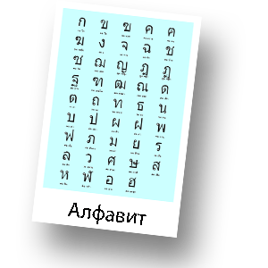

Тайский язык

Тайский язык принадлежит юго-западной ветви языков. Близок к лаосскому языку. Является Государственным языком Королевства Таиланд. Переименование Сиама в Таиланд произошло в 1939г. До этогого тайский язык назывался сиамским языком, т.е. тайский и сиамский язык — один и тот же язык. Общее число говорящих – около 30 млн. человек.
Тайский алфавит используется в тайском языке и в языках меньшинств Таиланда. В алфавите 44 согласных буквы, 4 согласных вне основного алфавита (две из которых в настоящее время не используются), 28 гласных букв и 4 диакритических знака для обозначения тонов. Согласные пишутся горизонтально слева направо, в то время как гласные располагаются сверху, снизу, слева или справа от соответствующего согласного.
В отличие от латиницы или кириллицы в тайском алфавите не различаются строчные и прописные буквы. Пробелы между словами обычно не ставятся. Чтение упрощается тем, что большинство тайских слов односложны. Предложения разделяются пробелами. Существуют особые тайские цифры.
Тайская письменность появилась в XIII веке на основе Южно-индийской. В разговорной речи выделяются четыре диалекта: центральный - бангкокский, южный, северный и северо-восточный - в соответствии с принятым делением Таиланда на географические зоны. Между ними имеются различия в области фонетики и отчасти в лексике, что не препятствует общению носителей разных диалектов. В основе литературного языка лежит центральный (бангкокский) диалект.
Тайский язык относится к языкам изолирующего строя, т.е.отношения между словами в предложении выражаются порядком слов, интонацией и служебными элементами.
В настоящее время, благодаря влиянию средств массовой коммуникации, происходит нивелирование различий между диалектами. Тайский язык являеся «тональным языком», иными словами, в тайском языке существует противопоставление гласных по долготе. Например: рак означает «любить», но раак - «корень».